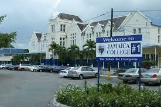
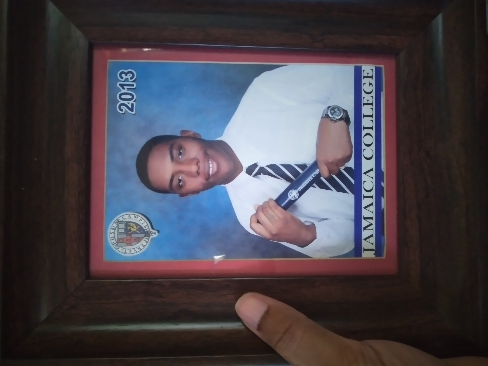
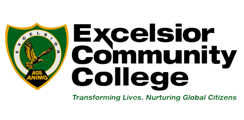
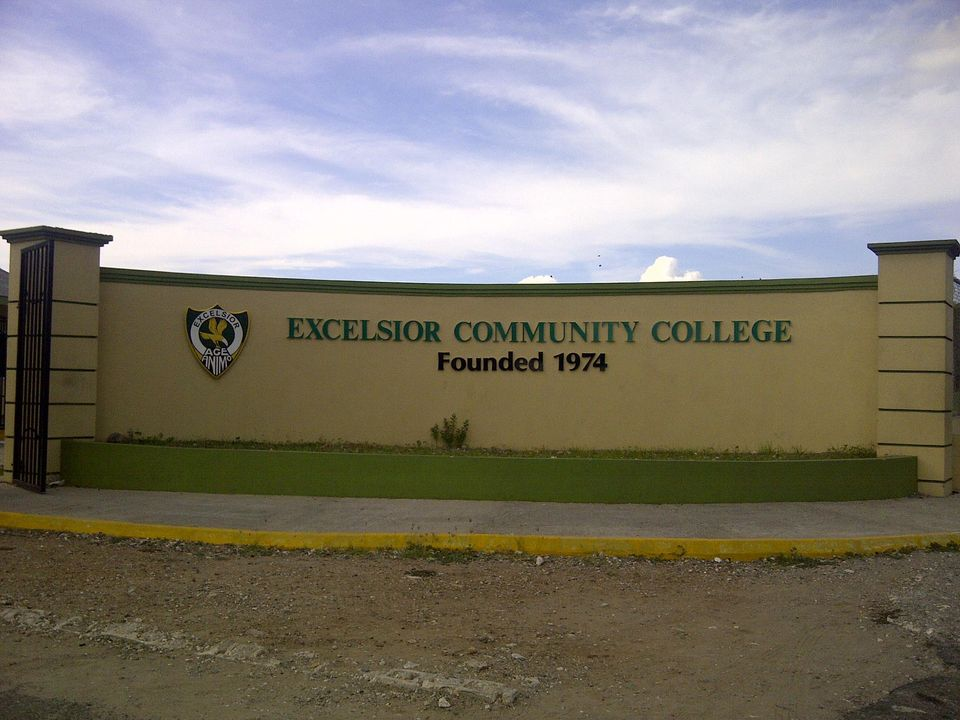
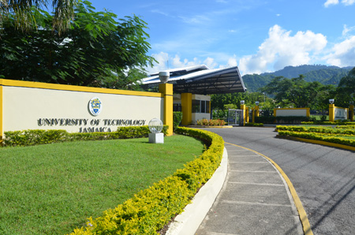
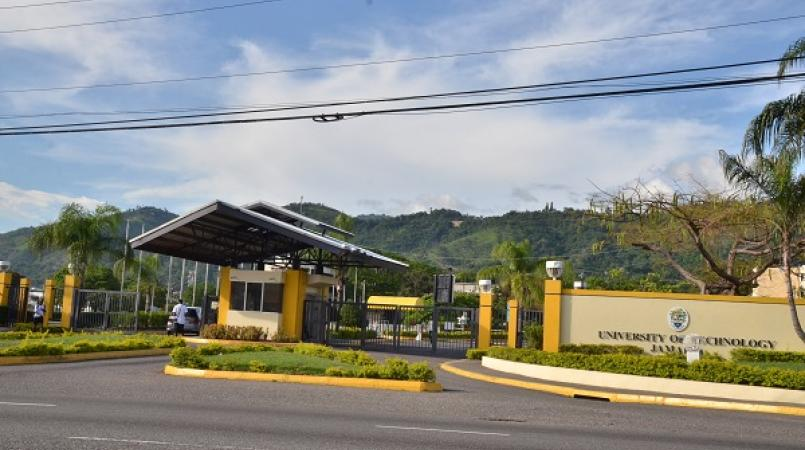
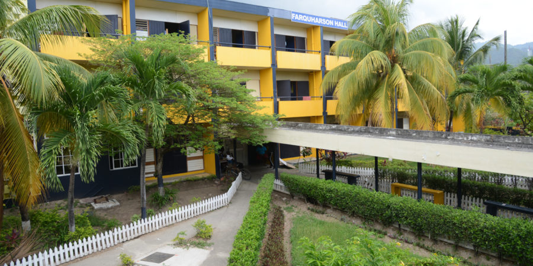

In my highschool years I attended the institution of Jamaica colledge for what I believe was 5 years

Although quite a few challenges were face it was at this institution that i secured my CXC subjects over the period of 5 years. As you would think, a great many ordeals of foolishness and madness were to be had here.... those are be better left unsaid, being a bystander to them was pretty interesting tho. It should also be noted that at this institution i excelled in my english language courses with the help of a teacher that did her best to give me extra tutoring, thank you to her.
After all the struggle and strife i finally graduated from this institute
The next part of my education journey took me to community college, particulary to excelsior comunity college
 This institution was where i secured my first cape level subjects, once agaiin excelling in english here.I have decent memeries here, nothing crazy to report from this one...... .... .. ..... y-yea...
The next journey where i am right now is at The University of Technology. at this institution i am currently trying to obtain my B.sc Degree in Animation development and production. 
The institute has done well so far in teaching its courses in my field but i still find it a hard struggle when i come to do a module that is outside my field. a person who practices to draw,illustrate and model definitly struggled when doing college math 1b and sewing..... yeah. still currently am struggling with project management and computer research but ill do my best at it.
 